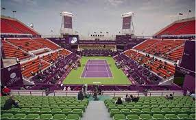

Tournaments
In tennis there are 5 different types of events that are played throughout the year. They include 125's, 250's, 500's, 1,000's, and grand slams. These tournaments determine the total amount of points that the winner can earn. At grand slams players can earn between 250 to 2,000 points if they win a tournament .
February 12 - February 18, 2024
Puerta Vallarta Open: Puerta Vallerta,Mexico: Feb 19 - Feb 25,2024

McCartney Kessler of the United States battled back on multiple occasions this week, which resulted in the highest-level title of her career at the WTA 125 Puerto Vallarta Open. Kessler, a lucky loser into the main draw, fought back from a set and a break down before outlasting Australian teenager Taylah Preston 5-7, 6-3, 6-0 in Sunday's 1-hour and 50-minute final in Mexico. The 24-year-old Kessler started the week as the No.1 seed in qualifying, where she was defeated by her fellow American Liv Hovde. However, Kessler got a second chance when she received the lucky loser spot after the injury withdrawal of another American, Amanda Anisimova. Kessler grabbed that opportunity with both hands, storming to the final without the loss of another set. The 18-year-old Preston, a wild card into the main draw, ended Kessler's set-winning streak and led 7-5, 2-0 in the final, but the American won 12 of the next 13 games to obtain her first WTA 125 title. Preston went 4-for-4 on break points in the first set on the way to her lead, but sturdy returning by Kessler helped her quickly pull back on serve and grab the momentum in the second set. Kessler leveled the match at one set apiece after Preston hit a double fault down set point at 5-3. Kessler took command for good in the third set, which ended with Preston's 10th double fault of the match. Kessler, a former University of Florida Gator, has also won two ITF Challenger titles since September -- both in Rome, Georgia, U.S.A. -- and she won a round at the Australian Open after receiving the USTA reciprocal wild card into that major. Both Kessler and Preston made their Grand Slam main-draw debuts at the 2024 Australian Open, and they have each made huge strides in the rankings already this season. Kessler has moved from No.231 at the start of this year to her current No.120; Preston has risen from No.244 to No.153 in the same span. The home country Mexico did pick up a trophy on Sunday, as their No.1 player, Renata Zarazua, was part of the championship-winning doubles team. Zarazua paired with Iryna Shymanovich to take the Puerto Vallarta Open doubles title, defeating the all-Italian duo of Angelica Moratelli and Camilla Rosatello 6-2, 7-6(1) in 1 hour and 27 minutes. It is the first WTA 125 doubles title for both Zarazua and Shymanovich.
Los Cabos Open:Los Cabos,Mexico : Feb 17 - Feb 24,2024
Patience has paid off in a big way for the 29-year-old Jordan Thompson — both this week on court at the Mifel Tennis Open by Telcel Oppo and in the larger scope of his tennis career. On Saturday night in Los Cabos, the Aussie won his first ATP Tour title by beating Casper Ruud 6-3, 7-6(4). The victory, in Thompson's third tour-level final, capped a dramatic week that saw him play for 12 hours across five matches. His run included three match point saves in a comeback from 6-0, 3-0 down against Alex Michelsen in the quarter-finals, as well as a three-hour, 40-minute win against Alexander Zverev in the semis that finished after 1 a.m. Saturday morning. His final victory was straightforward by comparison, but not without its own late drama. Thompson built a 5-3 lead in set two after trailing 0-2, but was pushed to a tie-break as Ruud locked in from the baseline down the stretch. Undeterred, the eighth seed regrouped to edge the Norwegian, clinching the ATP 250 trophy with a big serve and a forehand winner on his first championship point. Thompson flummoxed Ruud throughout the two-hour final with his variety and a measured all-court approach. The Aussie mixed in short and deep slices and won 18 of 22 net points with deft touch from the frontcourt. He also saved 11 of 13 break points against him while converting on all three of his break chances, according to Infosys ATP Stats. In addition to his first title, Thompson will also be leaving Los Cabos with a career-high Pepperstone ATP Ranking of World No. 32, eight spots up from his position entering the week. Thompson's previous tour-level finals both came in 's-Hertogenbosch, in 2019 and 2023. Thompson began his 2024 season by beating Rafael Nadal to reach the Brisbane semi-finals, and also reached consecutive quarter-finals in Dallas and Delray Beach prior to his Los Cabos run. Ruud dropped to 10-9 in tour-level finals with the defeat, his second loss this season and his first to a player outside the Top 25 this year. The Norwegian was also denied a return to the Top 10 in the Pepperstone ATP Rankings for the first time since November. Following his singles victory, Thompson got the better of Ruud for a second time on Saturday in the doubles semi-finals in Los Cabos. Thompson teamed with Max Purcell for a 7-6(1), 6-3 triumph against the Norwegian and his partner William Blumberg, giving Thompson the opportunity to become the first player since Nick Kyrgios (2022 Washington) to sweep the singles and doubles titles at the same ATP Tour event. The Australian did just that, as he and Purcell downed Gonzalo Escobar and Aleksandr Nedovyesov 7-5, 7-6(2). The fourth-seeded Purcell and Thompson won 79 per cent (37/47) of points behind first serves, according to Infosys ATP Stats, as they wrapped a 98-minute victory to claim their third ATP Tour title as a team and their second of this year after they triumphed in Dallas earlier this month.
Rio OPEN:Rio,Brazil:Feb 17 - Feb 25,2024
Sebastian Baez won the biggest title of his career Sunday at the Rio Open presented by Claro. The Argentine ended the dream run of countryman Mariano Navone, a qualifier, 6-2, 6-1 in the ATP 500 final. It is the fifth seed’s first title above ATP 250-level and the fifth tour-level trophy of his career. Entering the week, Navone had not won an ATP Tour match. The 22-year-old surged into the spotlight with a memorable run in Brazil, earning the adoration of the Brazilian crowd, which supported him until the end. But the more experienced Baez proved too solid on the red clay. The champion raced to a 4-0 lead before Navone could find any rhythm in the match and never looked back, clinching the championship after one hour and 23 minutes. Baez won 58 per cent of his return points according to Infosys ATP Stats and broke Navone’s serve six times from 14 chances. Whenever the finalist was not aggressive enough in rallies, Baez made him pay with timely shotmaking from tough positions. It was as if Baez was always one step ahead. That forced Navone to press more, leading to more errors. Baez will climb to a career-high No. 21 in the Pepperstone ATP Rankings Monday from No. 30. Navone will crack the Top 100 for the first time at No. 60. Colombian Nicolas Barrientos and Brazilian Rafael Matos won their first ATP Tour title as a team Sunday when they defeated Austrians Alexander Erler and Lucas Miedler 6-4, 6-3 in the Rio Open presented by Claro final. Barrientos and Matos reached their maiden tour-level semi-final together last week in Buenos Aires and went two steps further in Brazil. Matos became the first Brazilian champion in tournament history (singles or doubles) after his countrymen went 0-4 in Rio de Janeiro finals. The champions lost the first set in the first three matches they played this week, but brought their best with the trophy on the line. According to Infosys ATP Stats, Barrientos and Matos saved nine of the break points they faced to triumph in one hour and 33 minutes. The triumph marked Barrientos’ first ATP Tour title and Matos’ seventh. They are now fifth in the Pepperstone ATP Doubles Teams Rankings.
Qatar ExxonMobil Open :Doha,Qatar: February 17 - 25 February,2024 Karen Khachanov triumphed at the Qatar ExxonMobil Open on Saturday to capture his sixth tour-level crown and first of this season. In a heavy-hitting battle, the 27-year-old outlasted #NextGenATP Czech Jakub Mensik 7-6(12), 6-4 at the ATP 250, where Khachanov did not drop a set all week. Khachanov fended off four set points in the opener before he stepped in on the 18-year-old’s second serve at 12/13, crushing a forehand return to gain a one-set advantage on his fourth set point. Khachanov, who is up two spots to No. 15 in the Pepperstone ATP Live Rankings, built upon his momentum to break Mensik’s serve in the opening game of the second set. It deflated a dream week for the teen, who was competing in just his third tour-level event and had become the youngest finalist in Doha tournament history. Both players fired booming serves throughout the one-hour, 49-minute encounter, precisely hitting their targets and searching for the first opportunity to step inside the court. "For a minute, I thought I was playing John Isner and not Jakub Mensik today," Khachanov said with a laugh during the trophy presentation regarding Mensik's 16 aces. Khachanov did not face a break point all match as he won 83 percent of points behind his first delivery. He maintained hefty firepower from the baseline and held the advantage in backhand cross-court rallies to claim his first title since Zhuhai last September. Mensik impressed throughout the entire week in Doha, where he defeated Alejandro Davidovich Fokina and three former champions — Andy Murray, top seed Andrey Rublev and Gael Monfils — en route to his first tour-level final. The Prostejov native is up to a career-high No. 87 in the Pepperstone ATP Live Rankings and will make his Top 100 debut on Monday. Mensik also holds the top spot in the Pepperstone ATP Race to Jeddah as he aims for his first trip to the 20-and-under Next Gen ATP Finals. The 6'4" Mensik took advantage of a Next Gen Accelerator Programme wild card into the ATP 250 as part of new opportunities for players aged 20 and under. Players inside the Top 350 receive up to eight ATP Challenger Tour 100 and 125 opportunities. But as a Top 250 player Mensik also receives one wild card into one ATP 250 main draw (and two ATP 250 qualifying events). Jamie Murray and Michael Venus collected their first title of the season at the Qatar ExxonMobil Open after they survived Italians Lorenzo Musetti and Lorenzo Sonego 7-6(0), 2-6, 10-8 in Saturday's final. The British-Kiwi team, who won four team titles in 2023, dropped just one set all week en route to the ATP 250 crown. The Doha triumph comes as a welcome sight for Murray and Venus, who entered the week winless in 2024 (Murray playing two events, Venus playing five events). Musetti and Sonego, both Top 50 singles players in the Pepperstone ATP Rankings, were competing in their first tour-level doubles final as a team. Jamie Murray and Michael Venus are into their first final of the season at the Qatar ExxonMobil Open, where on Friday they marched past Ariel Behar and Adam Pavlasek 6-4, 7-6(5) in the semi-finals. The top seeds Murray and Venus, who have not dropped a set all week, avenged their Australian Open first-round loss to Behar and Pavlasek in one hour, 25 minutes. Murray and Venus won 67 per cent of their second-serve points, compared to their opponent's 45 per cent. Despite entering Doha 0-2 on the season, Murray and Venus have quickly rebounded to set a championship clash against Italians Lorenzo Musetti and Lorenzo Sonego, who ousted Andreas Mies and John-Patrick Smith 6-2, 6-7(4), 10-7 in the last four. Musetti and Sonego, both Top 50 singles players in the Pepperstone ATP Rankings, are aiming for their first team title.
Dubai Open :Dubai,United Arab Emirates: February 16 - 24 February,2024
Jasmine Paolini pulled off a gritty come-from-behind victory on Saturday to capture the highest-level title of her career, defeating qualifier Anna Kalinskaya 4-6, 7-5, 7-5 in the WTA 1000 Dubai Duty Free Tennis Championships final. Paolini, the World No.26 from Italy, outlasted 40th-ranked Kalinskaya in 2 hours and 13 minutes, battling back from a break down in each of the second and third sets. With the win, Paolini claims her second career singles title on the Hologic WTA Tour, and her first at WTA 1000-level. Paolini took home her first career WTA singles title at WTA 250 Portoroz in 2021, defeating Kalinskaya on the way to that trophy. Since that triumph, though, Paolini had been in three finals and lost them all. Additionally, Paolini had fallen to Kalinskaya earlier this year in a high-stakes match at the Australian Open. In the first Grand Slam Round of 16 for both of them, Kalinskaya prevailed in straight sets to make a breakthrough quarterfinal. However, Paolini turned those statistics around on Saturday, becoming the second Italian to take home the Dubai title after Sara Errani prevailed in 2016 (Dubai was a WTA 500 event that season). Paolini is the third Italian to win a WTA 1000 title, following in the footsteps of Flavia Pennetta at 2014 Indian Wells and Camila Giorgi at 2021 Montreal. The victory continues Paolini's recent rise up the rankings. The 28-year-old was ranked No.64 this time last year, but finished inside the year-end Top 30 for the first time in 2023. After her Dubai run, Paolini is projected to make her Top 15 debut on Monday. No.4 seeds Storm Hunter and Katerina Siniakova won their first title of the 2024 season at the Dubai Duty Free Tennis Championships, defeating No.3 seeds Nicole Melichar-Martinez and Ellen Perez 6-4, 6-2 in the final on Saturday. The victory is Hunter's eighth career doubles title and Siniakova's 23rd. Hunter and Siniakova won their first title together in a one-off pairing at 2022 Berlin, but the two former No.1s have teamed up for the 2024 season to form a formidable pair. Siniakova parted ways with long-time partner Barbora Krejcikova in the off-season and Hunter forged a similar path, splitting with Elise Mertens. Hunter and Siniakova needed just two tournaments together to capture their first title of the year. The Australian-Czech duo did not lose a set in Dubai, defeating Kato/Sudjiati, Aoyama/Krunic, and No.2 seeds Dabrowski/Routliffe to make Saturday's final. Little separated Hunter and Siniakova and Melichar-Martinez and Perez through the first set. Neither team generated a break point until the eighth game of the match. Facing down a deciding point at 3-4, Perez misfired on a double fault to give the eventual champions the only break of the set. With Siniakova patrolling the net and Hunter stepping in on baseline exchanges, the duo rode their momentum through the second set. Melichar-Martinez and Perez were unable to break serve in the match. Hunter and Siniakova broke in the opening game of the set and protected their lead to seal the win after 1 hour and 16 minutes. Siniakova and Hunter dominated the deciding points in the match, converting on three of four in the match. Melichar-Martinez and Perez were competing in their second final of the season, having made their first earlier in the month in Linz. The American-Australian duo was bidding to snap a seven-match losing streak in tournament finals. Siniakova and Hunter will now head to America to compete at next week's Cymbiotika San Diego Open before turning to the back-to-back WTA 1000 tournaments at the BNP Paribas Open and Miami Open.